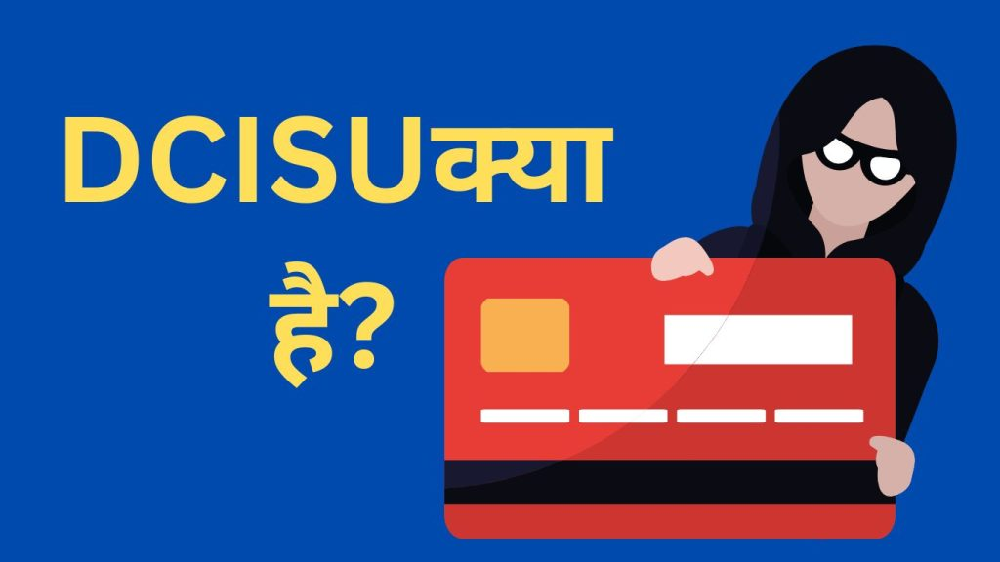

परिचय (Introduction)
Debit Card Issue (DCISU) एक Banking प्रक्रिया है जिसके माध्यम से एक व्यक्ति को Debit Card प्रदान किया जाता है। बैंक द्वारा अपने ग्राहकों को Debit Card उपलब्ध कराना एक आम Banking Service है जिसके माध्यम से बैंक ग्राहक विभिन्न वित्तीय लेनदेन कर सकते हैं। यह वित्तीय लेनदेन करने का एक आसान और सुरक्षित तरीका प्रदान करता है। इस लेख में, हम DCISU(Debit Card Issue) के बारे में विस्तार से चर्चा करेंगे और Debit Card Issue करने की प्रक्रिया, महत्व, लाभ, और Debit Card Issue से संबंधित अक्सर पूछे जाने वाले प्रश्नों के बारे में जानेंगे।
DCISU Full Form
DCISU का Full Form “Debit Card Issue” है। इसमें “Debit” शब्द व्यक्ति के खाते से पैसे काटने को संकेत करता है, जबकि “Card” एक इलेक्ट्रॉनिक कार्ड को दर्शाता है जिसे व्यक्ति उपयोग कर सकता है। Issue शब्द इसका अर्थ है कि यह इलेक्ट्रॉनिक कार्ड व्यक्ति को जारी किया जाता है। Debit Card किसी भी व्यक्ति को एक बैंक या किसी अन्य वित्तीय संस्था द्वारा ISSUE किया जाता है यह कार्ड उस वक़्ति के खाते से Link होता है जिसके कारण कार्ड धारक डेबिट कार्ड के माध्यम से अपने खाते में वित्तीय लेनदेन कर पाता है।
- Lien Amount क्या है? (Lien amount meaning In Hindi)
- Remittance क्या होता है ?Bank में इसका महत्व और लाभ जानिए हिन्दी में।
- व्यापारिक बैंक किसे कहते है (What is Commercial Bank)?
- Central Bank Of India का ATM PIN कैसे Generate करें?
- SBI Credit Card band kaise kare? ऐसे करे अपना credit कार्ड बंद
- Credit Card Se Cash कैसे निकालें?
{kind=link}

DCISU (Debit Card Issue) की प्रक्रिया
DCISU (Debit Card Issue) करवाने की प्रक्रिया निम्नलिखित है:
- आवेदन पत्र भरें: सबसे पहले बैंक में जाकर Debit Card Issue करवाने के लिए डेबिट कार्ड का आवेदन फॉर्म लेना है उसके बाद ,आपको बैंक के द्वारा प्रदान किए गए आवेदन पत्र को भरना होगा। इसमें आपको व्यक्तिगत जानकारी, जैसे नाम, पता, पैन कार्ड नंबर, आदि प्रदान करनी होगी।
- वैध पहचान पत्र जमा करें: आपको अपनी पहचान की प्रमाणित प्रतियों, जैसे पैन कार्ड, आधार कार्ड, पासपोर्ट, आदि की छाया प्रति आवेदन के साथ संलग्न करनी होगी। इससे बैंक को आपकी पहचान पुष्टि (Verify) करने में मदद मिलेगी।
- समय सीमा और शर्तें स्वीकारें: बैंक के नियमों के अनुसार, आपको Debit Card Issue कराने के लिए निर्धारित समय सीमा और शर्तें को पढ़कर स्वीकार करने के लिए स्ताक्षर करना होगा।
- शुल्क (Charge) भुगतान करें: Debit Card Issue करवाने के लिए, आपको बैंक के द्वारा निर्धारित शुल्क (Charge) भुगतान करना होगा।शुल्क (Charge) भुगतान करने के लिए आपके खाते में Debit Card issue Charge जितना Balance होनी चाहिए। बैंक अपने आप यह शुल्क (Charge) आपके खाते से काट लेगा, इसके बाद बैंक आपको एक Debit Card Issue करेगा जो आपके खाते से सीधा जुड़ा हुआ होता है , इसके बाद आप Debit Card द्वारा अपने खाते से लेनदेन कर सकते हैं।
DCISU Charge In Bank In Hindi
DCISU (Debit Card Issue) करवाने के लिए, बैंक में आपको एक नियमित शुल्क (Charge) भुगतान करना पड़ता है। इस शुल्क (Charge) की धनराशि बैंक से बैंक भिन्न हो सकती है और यह बैंक की नीतियों और आपके खाते के प्रकार पर निर्भर करता है। शुल्क (Charge) की जानकारी आप बैंक से प्राप्त कर सकते हैं । यह शुल्क (Charge) की राशि रुपए 100 से रुपए 1000 तक हो सकता है ।
यहाँ आपको कुछ बैंको के DCISU(Debit Card Issue) Charges देखने को मिलेंगे –
DCISU Charge In Bank Of Baroda
Bank of Baroda में DCISU Charge इस बात पर निर्भर (Depend) करता है की आप किस Type ka Debit Card Issue करा रहे है ।यहाँ कुछ डेबिट कार्ड के प्रकार और उनके शुल्क दिये गये हैं ।
- Classic Card ( Rupay,Visa,Master) :- Free DCISU First Year उसके बाद प्रतेक वर्ष रू 200+GST देने पड़ेंगे ।
- Platinum Card ( Rupay,Visa,Master) :- Free DCISU First Year उसके बाद प्रतेक वर्ष रू 300+GST देने पड़ेंगे ।
- Classic Card ( Rupay,Visa,Master) :- Free DCISU First Year उसके बाद प्रतेक वर्ष रू 200+GST देने पड़ेंगे ।
BOB (Bank of Baroda) DCISU चार्ज से संबंधित अधिक जानकारी के लिये आप Bank of Baroda के साईट पर भी जा सकते हैं –https://www.bankofbaroda.in/
DCISU Charge In State Bank of India
- Classic /Silver/Global/Contactless Debit Card :- Free No Charges First Year उसके बाद प्रतेक वर्ष रू 125+GST देने पड़ेंगे ।
- Gold Debit Card :- First Year ₹100/- + GST उसके बाद ₹175/- +GST प्रतेक वर्ष देना होगा ।
- Platinum Debit Card :- ₹300/- + plus GST उसके बाद ₹250/- plus GST प्रतेक वर्ष देना होगा ।
Debit Card Issue कराने के फायदे
Debit Card Issue कराने के निम्नलिखित फ़ायदे है:
- सुरक्षित (Safe and secure): Debit Card Issue करने के लिए वित्तीय संस्थाएं सुरक्षित प्रणाली का उपयोग करती हैं। इसके परिणामस्वरूप, उपयोगकर्ता अपने धन को सुरक्षित रख सकते हैं तथा इंटरनेट और अन्य Payment System में Security की चिंता किए बिना लेनदेन कर सकते हैं।
- व्यापक स्वीकृति (wide acceptance): Debit Card आमतौर पर लगभग सभी पेमेंट Outlet पर Accept की जाती है, जिससे डेबिट कार्ड धारक को वित्तीय लेनदेन करने में आसानी हो जाती है ।
- खाते से लेनदेन में आसानी : Debit Card issue करने से, खाते में लेनदेन करना आसान हो जाता है। कार्ड धारक अपने Debit Card का उपयोग करके बिना बैंक गये विभिन्न व्यापारिक स्थानों में खरीदारी और इंटरनेट पर ऑनलाइन भुगतान आसानी से कर सकते हैं।
Debit Card Issue – प्रश्नों का समाधान
DCISU का अर्थ क्या है?
DCISU का अर्थ “Debit Card Issue” है।
क्या Debit Card एक क्रेडिट कार्ड से अलग है?
हाँ, Debit Card एक क्रेडिट कार्ड से अलग होता है। Debit Card उपयोगकर्ता के बैंक खाते से पैसे काटता है, जबकि क्रेडिट कार्ड पर खरीदारी की गई राशि को बाद में चुकाया जाता है।
Debit Card Issue करवाने के लिए क्या दस्तावेज़ चाहिए?
पैन कार्ड,आधार कार्ड,वोटर आईडी और बैंक Passbook की छायाप्रति।
Debit Card को कहां इस्तेमाल किया जा सकता है?
खरीदारी करने, ऑनलाइन भुगतान करने, एटीएम मशीनों से नकदी निकालने, और विभिन्न व्यापारिक लेनदेनों के लिए इस्तेमाल कर सकते हैं।
समाप्ति
Debit Card Issue एक उपयोगी वित्तीय सेवा है जो उपयोगकर्ताओं को अपने खाते से आसानी से लेनदेन करने की सुविधा प्रदान करती है। यह सुरक्षित, सुरक्षित, और सुविधाजनक है और उपयोगकर्ताओं को अपने वित्तीय लेनदेन को प्रबंधित करने की अनुमति देती है। Debit Card Issue के माध्यम से, लोगों को खरीदारी करने, ऑनलाइन भुगतान करने, और व्यापारिक स्थानों में लेनदेन करने में आसानी होती है।